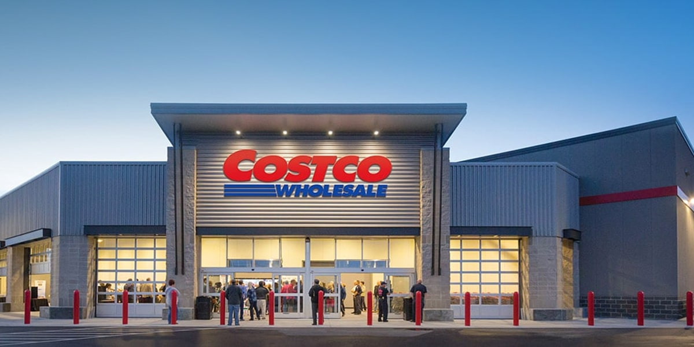
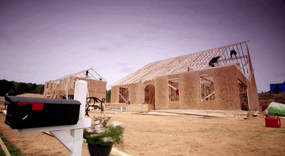
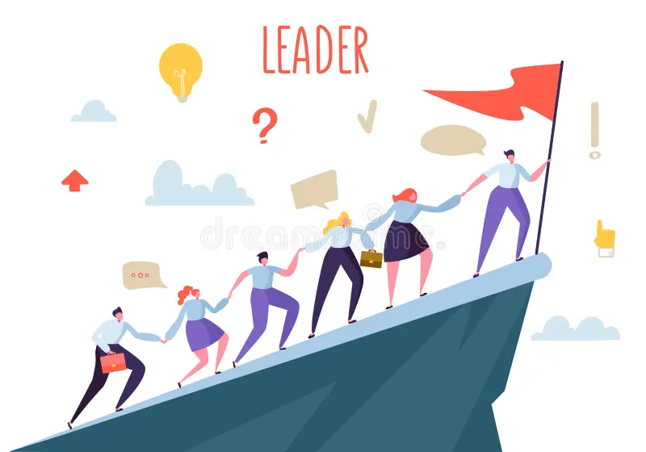
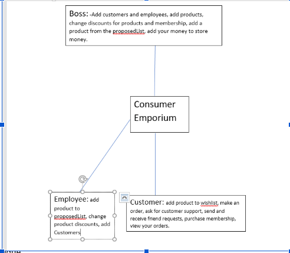

Project 1: Store Simulation
Captained a six-member team to develop a store simulation in Java using an agile approach, where a user could log in and play the role of boss, employee, or customer.
Pondering Our Goals
During Fall and Winter of 2021, the pandemic was coming to a close, and my professor asked the class to demonstrate their skills in comprehending the software engineering process. We were all sorted into groups, I remember mine as group 6. But the problem is none of us had an idea what we were going to make. We all threw our ideas in. But inevitably I came up with an idea, the Costco superstore.

During the pandemic, we were often heavily reliant on superstores such as Costco in order to manage supplies. So with further discussion we made the decision to make a simulation of a superstore that would run for a week within the simulation.

Building the Store
The issue here was how we would handle the coding over the months. We agreed on an agile process, as it would be more accommodating with our varying curricular and extracurricular hours. And I delineated the roles based on what they would program.

Over a period of weekly meetings on Discord, we would discuss the project together and program on Replit, using Java. I would ask what had been completed, and together we would discuss the state of the project. We programmed altogether 30 classes, including a main file that was over 1000 files. The rate of development increased near the deadline of the end of November. What we ultimately managed to create was quite a miracle.

The user can either play as either a boss, a customer, or employee, and carry out tasks relating to their role. For instance, a customer can purchase and gift items, a boss can order stock and add employees, and an employee can add customers to the system. The goal of the simulation is to ensure the store doesn't run out of money, and it runs for a week in-program. We also wrote up an extensive 47 page document documenting the project and use cases. We then delivered a presentation at the end of November detailing our presentation, and running test cases to display its capabilities. Attached below is my GitHub link.
https://github.com/IshmamHaque1112/CSCI370-GroupProject-Consumer_Emporium